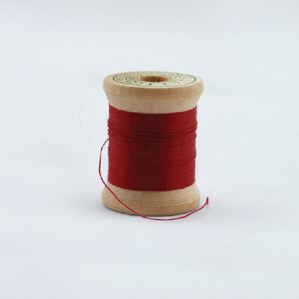
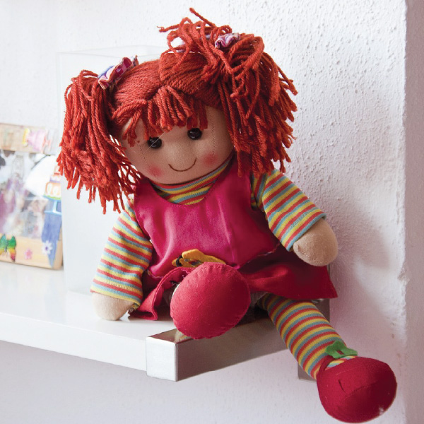
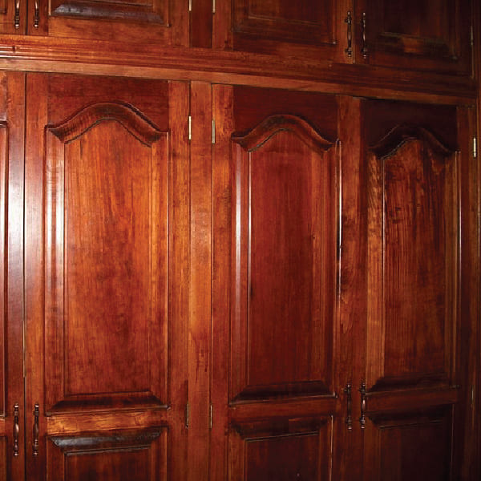
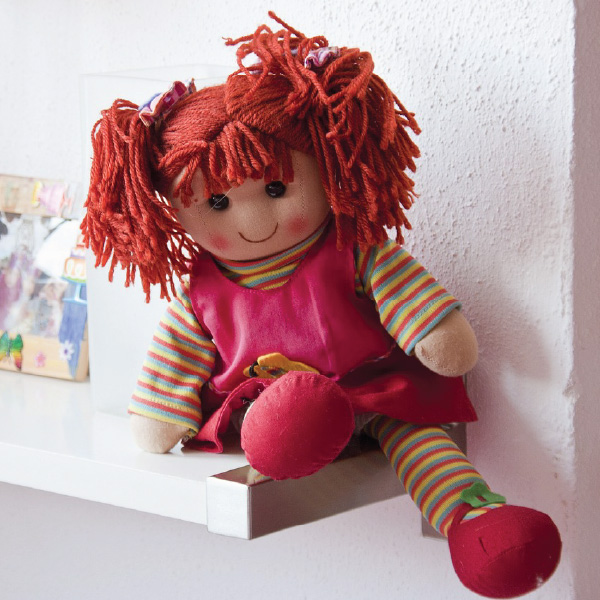
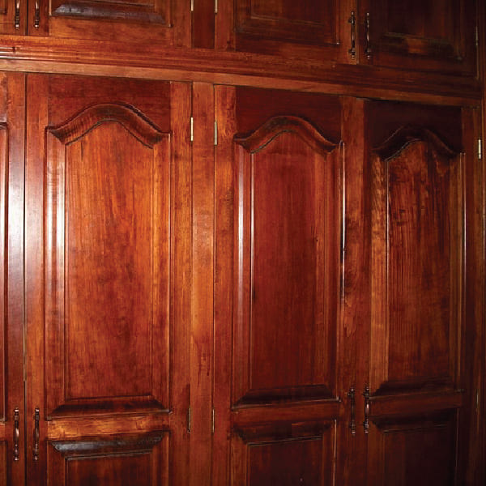
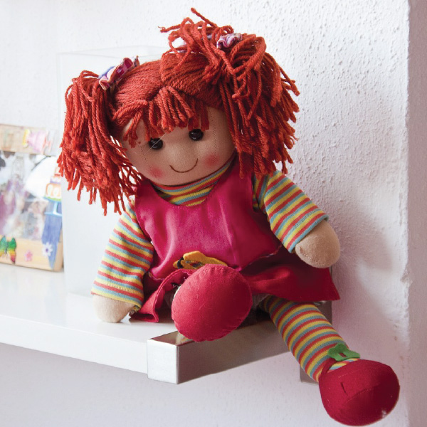
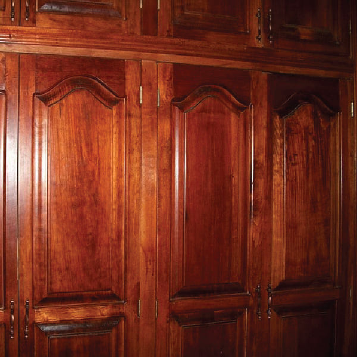

WARING
1. 이 놀이는 새벽 3시에 시작하며
절대 2시간 이상 초과해서는
안된다.
2. 숨바꼭질이 진행되는 동안 잠들거나
정신을 잃어선 안된다.
3. 놀이가 끝나면 반드시 인형을 불에
태워야 한다.
준비물
붉은 실, 자신의 손톱, 인형, 쌀, 소금물(혹은 술), 숨을 곳

 





첫번째
인형의 솜을 전부 뺀 후 쌀과 자신의
인형에 쌀을 가득 채워넣고 자신의 손톱을 깎아 인형 안에 넣는다. 그리고 붉은 실로 인형을 묶는다. 마지막으로 인형에 이름을 지어주면 기본적인 준비는 끝난다.
두번째
소금물(혹은 술)을 준비하고 집안의 불을 끄며 텔레비전은 켜두는데, 이 때 채널이 나오지 않고 지지직거리는 채널을 틀어야 한다. 외부 입력에서 아날로그로 돌리면 된다.
세번째
욕조에 물을 채우고 그 안에 인형을 넣는다.새벽 3시가 되면 화장실로 가서 인형에게 '첫 번째 술래는 (자신의 이름)' 을 외치고 거실로 돌아와 눈을 감고 10을 세고 다시 화장실로 돌아가서 인형에게 '(인형의 이름) 찾아냈다' 라고 외친 다음 인형에게 다가가 준비한 뾰족한 도구로 인형을 찌른다.
네번째
숨어 있는 동안 발생하는 이현상을 관찰한다. 숨어 있을 때는 조용히 있어야 하며 잠이 들거나 정신을 잃어서는 안 된다.